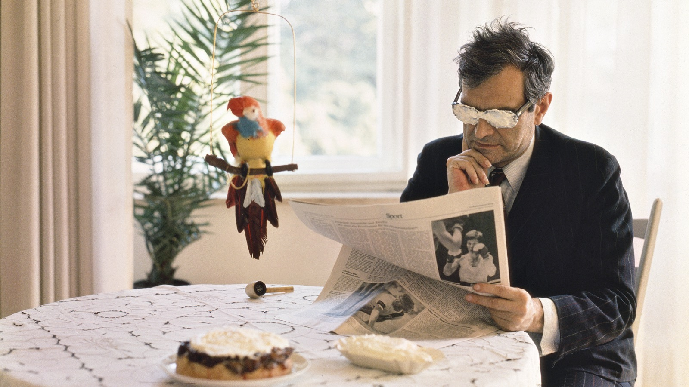

Het ABC van Marcel Broodthaers

Marcel Broodthaers (1924–1976) geldt als een van de belangrijkste Belgische kunstenaars van de twintigste eeuw. Zijn mosselen en eieren zijn wereldberoemd, maar zijn omvangrijke oeuvre blijft voor velen een raadsel. Opmerkelijk genoeg begon Broodthaers pas op zijn veertigste aan zijn carrière als beeldend kunstenaar. Daarvoor was hij dichter, al kon hij nauwelijks van zijn poëzie leven. In 1964 goot hij onverkochte exemplaren van zijn dichtbundel Pense-Bête in gips. Het betekende het begin van een even korte als uitzonderlijke kunstenaarscarrière.
Met alledaagse voorwerpen, woordspelingen, films en installaties ontwikkelde Broodthaers een hoogst eigenzinnige beeldtaal. Hij liet zich inspireren door René Magritte en de popart, maar ging al snel zijn eigen weg. In zijn fictieve Musée d’Art Moderne, Département des Aigles stelde hij de rol van musea, de betekenis van kunstwerken en de macht van beelden ter discussie. Zijn werk was tegelijk poëtisch en politiek, ernstig en humoristisch. Achter ogenschijnlijk eenvoudige objecten gingen complexe ideeën schuil over taal, geschiedenis en de kunstwereld.
Het ABC van Marcel Broodthaers probeert het raadsel van de kunstenaar te ontrafelen aan de hand van gesprekken met mensen die hem persoonlijk hebben gekend. Onder anderen zijn echtgenote Maria Gilissen, galeriehoudster Anny De Decker en kunstenaars Walter Swennen en Jacques Charlier halen herinneringen op aan zijn leven en werk. Samen schetsen ze het portret van een charismatische, ambitieuze en tegendraadse man die voortdurend speelde met verwachtingen en betekenissen. De documentaire biedt geen definitieve verklaring van zijn oeuvre, maar nodigt de kijker uit om zelf op ontdekking te gaan.
- Regie
- Bertrand Lafontaine, Pieter Verbiest
- Eindredactie
- Bertrand Lafontaine
- Camera en montage
- Pieter Verbiest
- M HKA Antwerpen · 21.11.2019
- Canvas · 24.11.2019